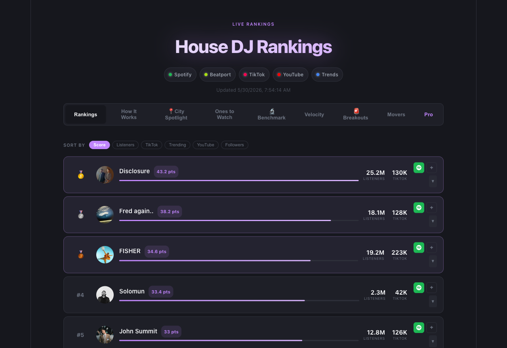
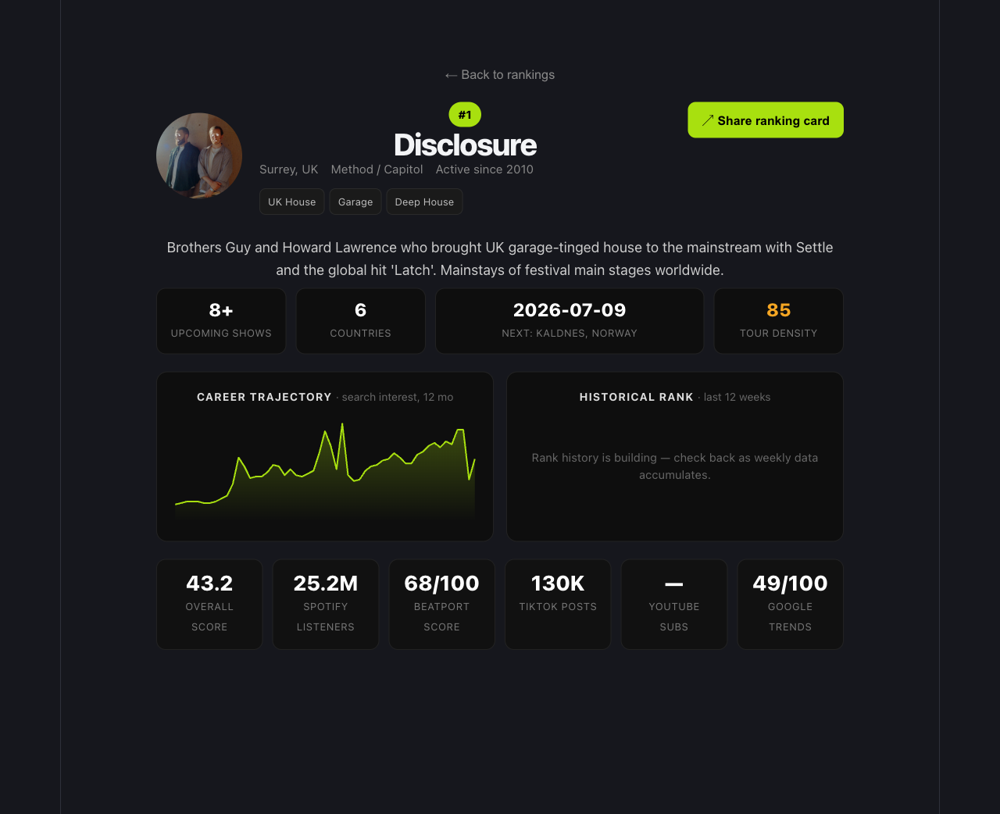
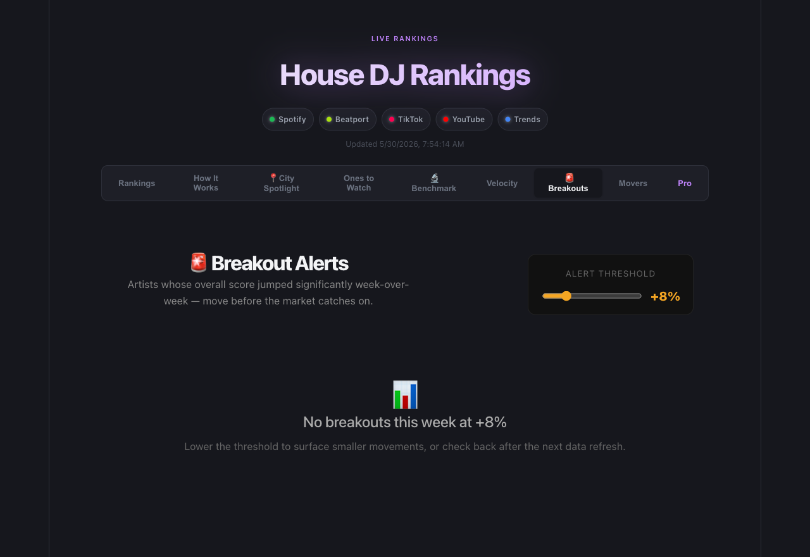
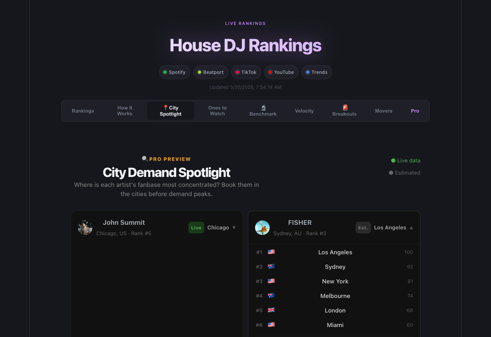
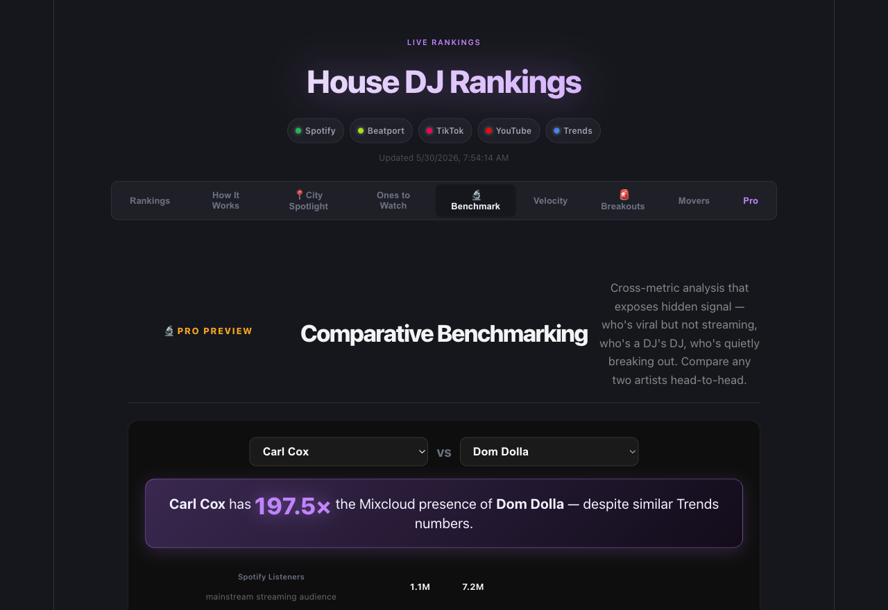
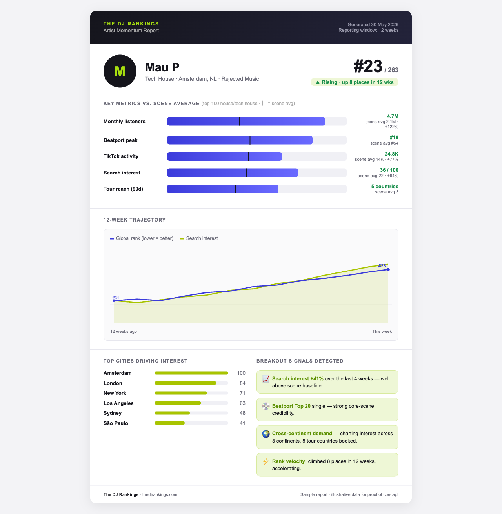
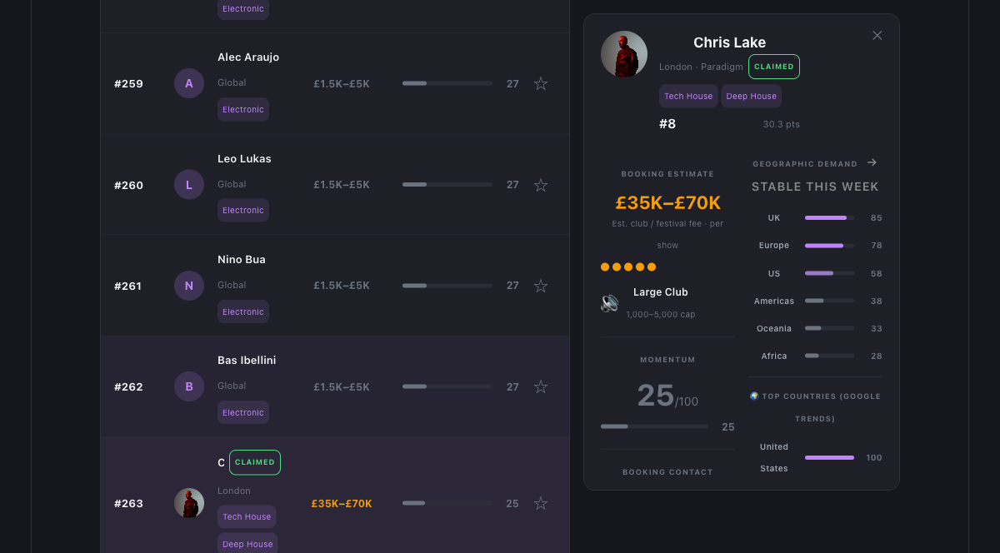

A data platform that ranks the world's house and techno artists by combining streaming, social, chart, search, and touring signals into a single, continuously updated measure of demand.
thedjrankings.com. Navigate with the left and right arrow keys.
An artist's popularity is fragmented across Spotify, Beatport, TikTok, YouTube, Google search, and live touring. No single source captures it, and the industry currently relies on instinct and relationships to value talent.
The DJ Rankings consolidates these signals, normalizes them onto one scale, and updates daily. For enthusiasts it is a credible discovery tool. For industry professionals it is a decision instrument for identifying momentum and pricing talent earlier than competitors can.
Every artist receives a weighted composite score across all signals, refreshed daily. The result is a transparent, multi-source chart of the scene, comparable to an industry standard index rather than a single sales or streaming metric.

Selecting any artist, for example Disclosure, opens a dedicated profile: biography, genre tags, label, booking-relevant metrics, a 12-month trajectory chart, and historical rank.
Artist names are linked throughout the entire site, so the platform functions as a navigable reference, not just a leaderboard.

Each signal is normalized to a 0 to 100 scale across the full field, then combined using fixed weights that sum to 100 percent. Streaming reach carries the most weight; scene credibility, growth, and search interest balance it.
Composite score = the sum of each normalized signal multiplied by its weight. Publishing the methodology is deliberate: transparency is what allows press, labels, and fans to cite the index as a source.
The signals are intentionally diverse. The gaps between them are where the analytical value lies.
Mainstream streaming reach. The size of the casual audience.
The DJ retail chart. Presence signals credibility with the core scene.
Cultural and viral activity, often the earliest breakout indicator.
Depth of fandom through subscribers and weekly views.
Public search interest, with 12 months of history and geography.
Mix credibility and live touring density. Real-world demand.
The field is re-ranked by a momentum score rather than size, surfacing emerging artists before they reach scale. Established acts are excluded by reputation, isolating genuine new talent.
Note the spread in overall rank. An artist at #170 with high momentum is precisely the kind of early signal labels and bookers pay to find. Momentum, not current size, is the leading indicator.
Built on 12 months of search-interest history, Velocity reports 4-week and 12-week growth for each artist. The distinction between popular and rapidly gaining is the entire basis for acting early on talent.

The system flags artists whose composite score rises past an adjustable threshold week over week, and identifies the specific signals driving the change.
This directly answers the core question for A&R and promotion teams: which artists are about to break.
Search-interest geography shows the cities and countries where demand for an artist concentrates. The example below ranks John Summit's markets: Chicago leads at 100, followed by New York, Los Angeles, Miami, and Toronto. A promoter learns where to book, not only whom.

Any two artists can be compared across every signal. In this example, PAWSA and Cloonee draw similar search interest and comparable Spotify audiences, yet PAWSA carries roughly 2.2 times the TikTok presence while Cloonee holds the stronger Beatport position. Similar size, different profiles.
No comparable index exposes the gap between reach, social buzz, and scene credibility. That gap is what indicates whether an artist is underpriced, overexposed, or undervalued.

Each profile includes a downloadable ranking card for social media and a one-page momentum report: rank and trend, metrics versus the scene average, top markets, breakout signals, and a 12-week trajectory.
The report addresses a recurring need: a manager sending evidence of demand to a festival buyer. This is a primary commercial entry point into the professional market.

The free tier builds the audience and search footprint. The professional tier converts the industry. The following slide details the distinct value to each professional segment.
Everything that drives traffic and credibility remains free: rankings, discovery, momentum, and profiles. The decision-grade tooling professionals depend on sits behind a subscription.

Selecting an artist opens a decision view: an estimated booking-fee range, venue-size fit, geographic demand, momentum, and direct booking contact, with the option to shortlist and export.
The free tabs answer "who." The professional tier answers "whom should I book, in which market, and at what fee."
263 artist profiles capture long-tail queries such as booking fee, monthly listeners, and rank. A compounding organic-traffic asset.
Ranking cards and momentum reports are designed to be shared by artists and fans. Each share links back to the platform.
A dedicated Instagram and short-form presence posting regular insights, such as an artist breaking out, drives steady attention and referral traffic back to the site.
Weekly Movers, Breakouts, and Ones to Watch supply a newsletter, social calendar, and press hooks, creating a reason to return.
Recurring revenue from the Artist (£29) and Booker (£49) tiers. The core engine.
Agencies and labels pay for feeds and API access. Defensible B2B revenue at higher contract values.
Labels pay to feature a release or rising artist in the Breaking section. Standard in music media.
Google Ads and direct sponsored promotions against a high-intent, genre-specific audience.
One-off premium momentum and benchmark reports for managers and agencies.
Referral commissions on ticketing and booking links surfaced across profiles.
The tiers reinforce one another: the free product grows audience and search, subscriptions convert professionals, and licensing scales to institutions.
The DJ Rankings makes the demand economy of dance music measurable. The free tier is built to grow through search and sharing, the professional tier is priced for the industry, and the underlying data positions the platform to scale into a licensing business.
thedjrankings.com